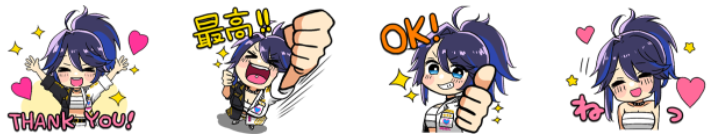

ksonSOUCHOU2 Line 貼圖內容翻譯
貼圖內容太多張了，翻譯過一遍之後用起來比較快

單純自己買了結果總是記不住那個是哪個，所以透過翻譯一遍讓自己記得
真的找不到的時候也可以拿來當小抄看
LINE 貼圖這邊買：ksonSOUCHOU2
起源應該是看到這篇烤肉才決定給他買下去的啦！
有兩種版本，戴眼鏡的跟沒戴眼鏡的。內容看來是一樣，只是我覺得眼鏡版的眼睛被遮住
不然平常總長出場形象是戴眼鏡比較多，另一款的連結：ksonSOUCHOU
| 貼圖內容 | 讀音 | 說明 |
|---|---|---|
| うるせえ SHUT UP!! |
urusee うるせえ |
住口！ |
| ふ〜〜ん | hu～～ n ふ〜〜ん |
唔（hmmmm） |
| - | - | - |
| トイレ行ってくる | toire i xtu te kuru といれいってくる |
去一下廁所 |
| 貼圖內容 | 讀音 | 說明 |
|---|---|---|
| トイレ行ってきた | toire i xtu te ki ta といれいってきた |
去廁所了（過去式） |
| ふざけんじゃあないよ | huzaken zyao nai yo ふざけんじゃおないよ |
開什麼玩笑啊 |
| PIZZA | 披薩 | |
| お前よお！ | o mae yoo おまえよお！ |
你這傢伙 |
| 貼圖內容 | 發音 | 說明 |
|---|---|---|
| 解釈一致 | kaisyaku itti かいしゃくいっち |
我也是這樣想的 |
| 払えお | hara e o はらえお |
付錢啊 |
| グレてやる！ | gure te yaru ぐれてやる！ |
我會做的！ |
| ゆるさんぞ | yuru san zo ゆるさんぞ |
不會原諒你的 |
| 貼圖內容 | 讀音 | 說明 |
|---|---|---|
| ニコッ | nikoxtu にこっ |
（笑聲） |
| どうしよ | dou siyo どうしよ |
該怎麼辦呢 |
| SORRY！ | 對不起、抱歉 | |
| 泣 | kyuu きゅう |
哭哭 |

| 貼圖內容 | 讀音 | 說明 |
|---|---|---|
| THANK YOU | THANK YOU | 謝謝 |
| 最高 | saikou さいこう |
最棒了！ |
| OK | OK | |
| ねっ | netsu ねっ |
（撒嬌的笑） |
| 貼圖內容 | 讀音 | 說明 |
|---|---|---|
| ﾄﾞﾔｧｧｧｧ | doyaaaa どやぁぁぁ |
怎麼樣啊（得意） |
| ブルンブルン | burun burun ぶるんぶるん |
（引擎聲） |
| 夜露死苦 | yoroshiku よろしく |
請多多指教 |
| 我血恋上等 | gachikoi zyoutou がちこいじょうとう |
ガチ恋最強 |
| 貼圖內容 | 讀音 | 說明 |
|---|---|---|
| 村じゃねえよ | mura zya nee yo むらじゃねえよ |
才不是村（長） |
| 農家じゃねえよ | nouka zya nee yo のうかじゃねえよ |
才不是農夫 |
| 気合いを入れる | kia i wo i reru きあいをいれる |
打起精神來 |
| コーファ！！ | ko-fa こーふぁ |
（打招呼） |
| 貼圖內容 | 讀音 | 說明 |
|---|---|---|
| プルプルプル | purupuru puru ぷるぷるぷる |
（電話聲） |
| - | - | - |
| Cheers! | 乾杯 | |
| プイﾂ | puitsu ぷいつ |
（鼓起臉撇頭） |
| 貼圖內容 | 讀音 | 說明 |
|---|---|---|
| GGMF | Good Morning My Friend | |
| www 草 | kusa くさ |
笑死、太好笑了 |
| そっすか… | sotsu suka うるせえ |
是這樣啊… |
| おやすみ | oyasumi おやすみ |
晚安 |
| 貼圖內容 | 讀音 | 說明 |
|---|---|---|
| きゅるるん | kyu ruru n きゅるるん |
（裝可愛的音效） |
| - | - | - |
| 作業中 | sagyou tyuu さぎょうちゅう |
工作中 |
| オラあああ!!! | ora a a a おらあああ |
（一種攻擊時候的吼聲） |
需要特別提醒總長的貼圖用詞是比較粗魯的，要注意使用的對象！
所以日本人用的比台灣人少倒是不意外，畢竟有些是連好朋友之間都不太會用
要到類似於台灣可以問候人家「你怎麼還沒死」而不會翻臉的那種要好程度才敢使用吧
有很多是沒辦法直接翻譯的狀聲詞或是口語用詞 ，只能就情境稍微嘗試解釋